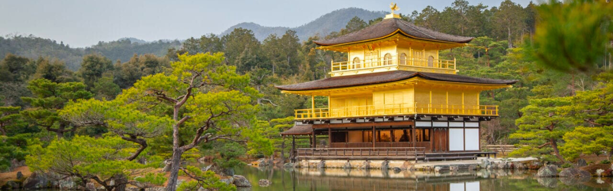
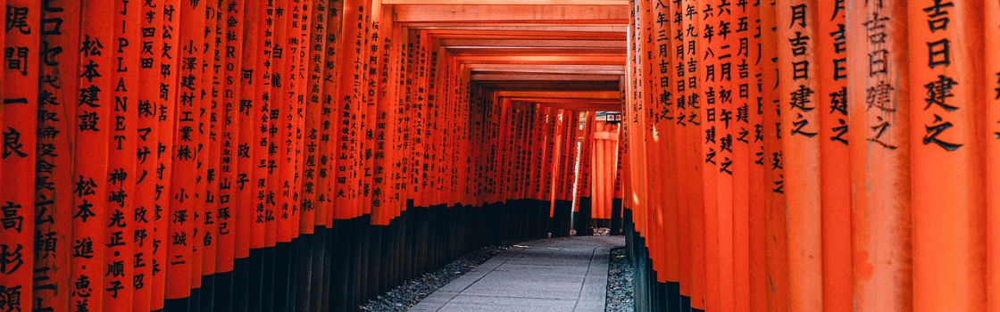
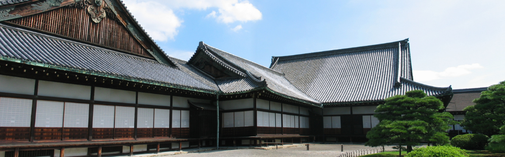

Para os amantes de história
Descubra 3 destinos imperdíveis em Kyoto
Kyoto, a antiga capital imperial do Japão, é um destino repleto de templos, santuários e jardins,
preservando sua rica herança cultural. Com vários Patrimônios da Humanidade pela UNESCO, a cidade
encanta com suas ruas tradicionais, casas de chá e o charmoso distrito de Gion, onde as geishas mantêm
viva a tradição.

Templo Kinkaku-ji (Pavilhão Dourado)
O Kinkaku-ji é um templo zen budista famoso por sua estrutura coberta com folhas de ouro puro. Localizado
no norte de Kyoto, ele é um dos mais conhecidos e visitados pontos turísticos do Japão.
- O templo foi originalmente construído no século XIV como uma villa do shogun Ashikaga Yoshimitsu.
- O Kinkaku-ji foi destruído por um incêndio em 1950 e reconstruído em 1955.
- Seu reflexo na água do jardim circundante cria uma vista espetacular, especialmente durante o pôr do
sol.

Fushimi Inari Taisha
Famoso por seus milhares de portões vermelhos "torii", este santuário dedicado ao deus Inari é um dos
locais mais icônicos de Kyoto. O caminho repleto de torii leva até o topo da montanha, oferecendo uma
experiência única aos visitantes.
- O santuário foi fundado no século VIII e é dedicado ao deus Inari, o deus do arroz, da agricultura e
do sucesso nos negócios.
- Os torii são doados por empresas ou indivíduos que buscam prosperidade, e os nomes dos doadores
estão gravados nos portões.
- O caminho até o topo da montanha tem cerca de 4 km de extensão e leva cerca de 2 horas para ser
percorrido.

Castelo Nijo
O Castelo Nijo, construído no século XVII, foi a residência do shogun Tokugawa Ieyasu em Kyoto.
Conhecido por sua arquitetura impressionante, o castelo também é famoso pelos seus "pássaros cantores",
que emitem sons quando alguém anda sobre o piso, um sistema de segurança projetado para alertar sobre
intrusos.
- O castelo foi declarado Patrimônio Mundial da Humanidade pela UNESCO em 1994.
- Suas paredes são adornadas com pinturas que retratam a vida de samurais e cenas da natureza.
- O castelo tem uma grande área de jardins que incluem um lago e plantas típicas da região.